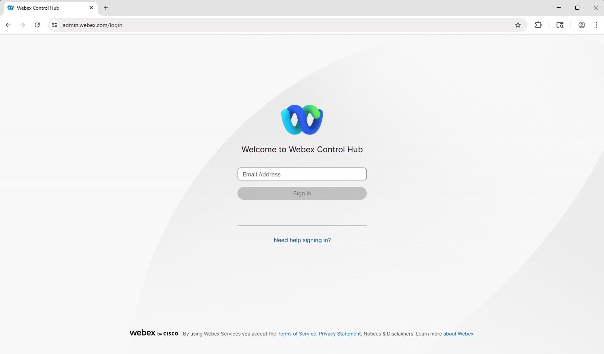

Access you Lab Environment
Learning Objectives
Know before you start
- We will be using a shared lab tenant for simulations, meaning all attendees will work within the same Webex Contact Center environment. To avoid conflicts, ensure that any entities you configure are tagged with the Attendee ID assigned to you.
- The majority of the configuration in Control Hub is already set up, allowing you to focus primarily on configuration of Webex AI Agent and other AI features. Of course, there may still be some elements to adjust, but these should be minimal, letting you concentrate on building and refining the flow logic rather than spending time on initial setup.
- The Human Agent has been configured for you. You will be performing the rest of the configuration for the AI Agent and the integration with the channels.
- Please ask for help when you need it. You can do so by:
a. Dropping your question in the LAB Space LTRCCT-2000 Hands-On AI in Action from Webex App in your Lab PC.
b. Raising your hand and calling the proctor.
Predefined configuration
Entry Point/Channel:
_2000_Channel Queue:
_2000_Voice_Queue Team:
_2000_Team Admin:
wxcclabs+admin_ID @gmail.com Supervisor:
wxcclabs+supvr_ID @gmail.com Webex App has been pre-installed on your Lab PC
Inbound Phone Number: Assigned to your Channel
_2000_Channel
More pre-configured entities will be mentioned during the lab missions if they have any.
Login Access
Login to Control Hub.
-
Open up Google Chrome Web browser and login to Control Hub. 
-
Login using your provided Admin username and password.

{kind=link}
Login to Webex App.
-
Open the Webex App on your PC.

-
Sign in using the Admin credentials. (The same credentials you used to login to the Contorl Hub).
-
If you receive a prompt to add an Address, click Cancel.

Calling to Contact Center
Place test call to the test number +15206603108 to confirm that you Webex Phone is configured to place calls. You will hear TTS response from the test flow. If you are planning to use your cellphone for testing you can also try to call the number.

Place test call to the test number +15206603108 to confirm that you Webex Phone is configured to place calls. You will hear TTS response from the test flow. If you are planning to use your cellphone for testing you can also try to call the number. (Caution: Test number is a US one, so additional charges may apply if you use your personal device)..